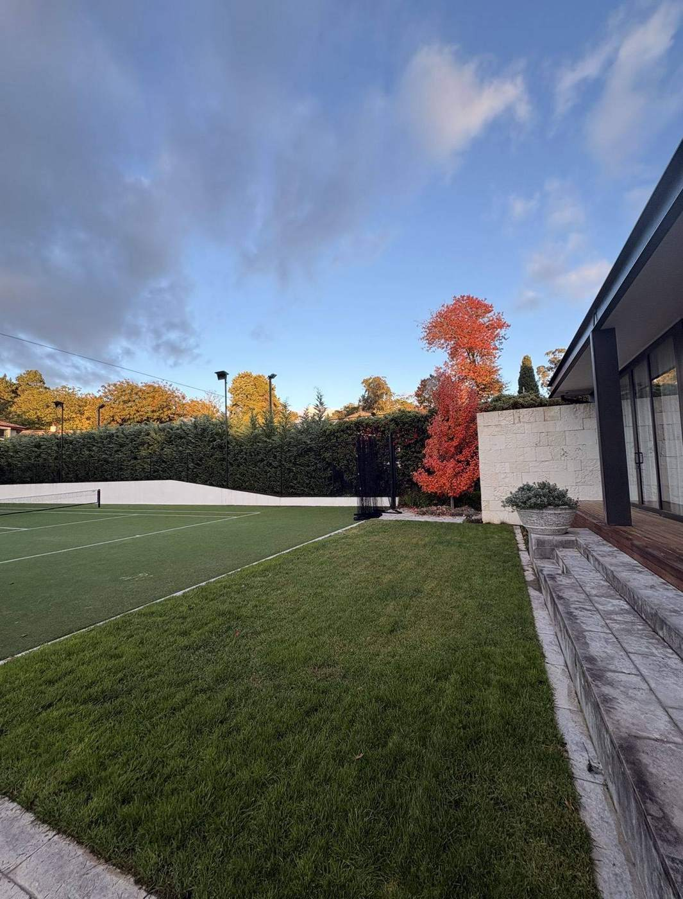
01
Backyard Transformations & Garden Design
Complete backyard makeovers, planned and built by one team: design, turf, garden beds, paths, paving and planting. You get a finished outdoor space, not a list of trades to coordinate.
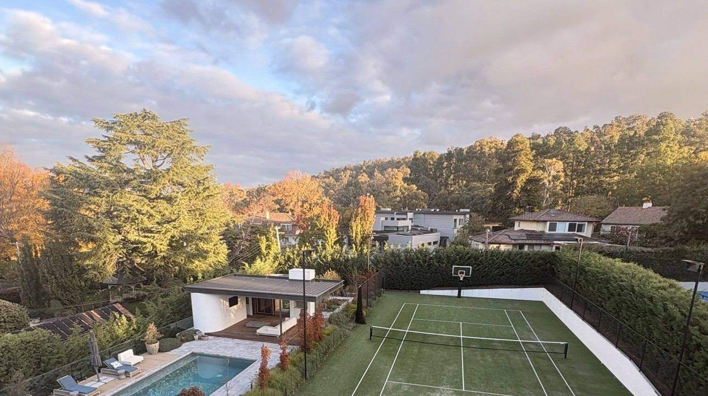
Outstyle Property · Servicing all of Canberra
Lawns, hedging, garden clean-ups and full backyard transformations — designed and built by a local Canberra team that sweats the details.
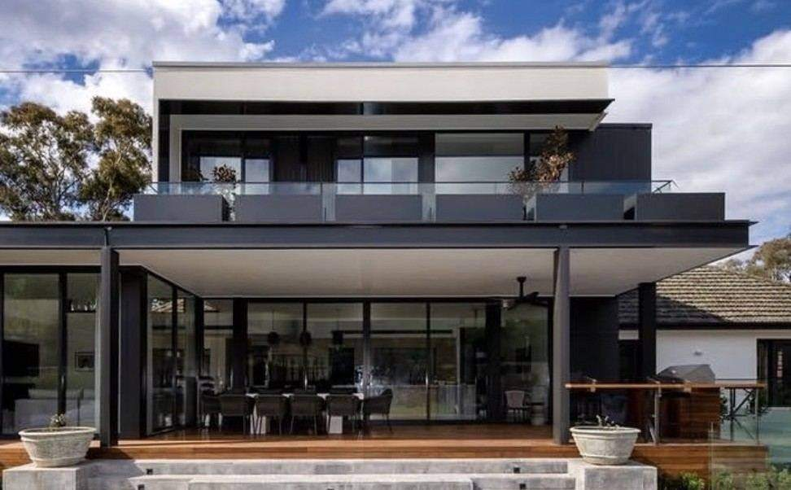
Why Outstyle
Outstyle Property transforms Canberra outdoor spaces into functional, stylish, low-maintenance gardens. From a fortnightly mow to a complete backyard makeover, we bring the same attention to detail you'd expect inside your home — just outside.
Owner-operated by Harry Sly, so you deal with the person doing the work.
Punctual, tidy and respectful on site — our reviews say it best.
Honest, upfront quotes.
One team for everything, from lawns to landscape construction.
Services
Nine services, one local team. Regular garden care or a one-off project, quoted free and done properly.

01
Complete backyard makeovers, planned and built by one team: design, turf, garden beds, paths, paving and planting. You get a finished outdoor space, not a list of trades to coordinate.
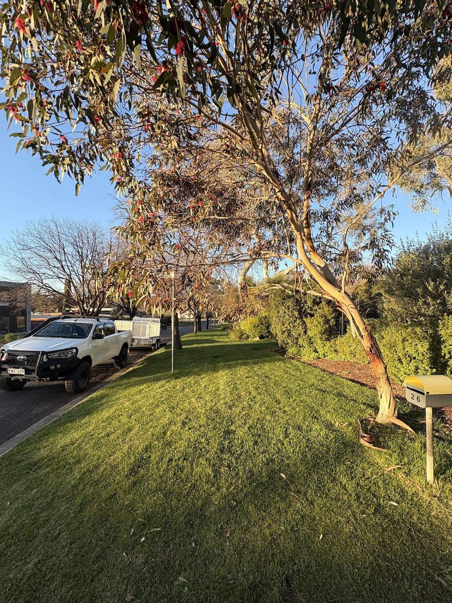
02
Regular or one-off mowing, edging, whipper-snipping and fertilising. Every visit is tuned to Canberra's seasons, from summer growth to winter frost, whether your lawn is fescue, couch or kikuyu.
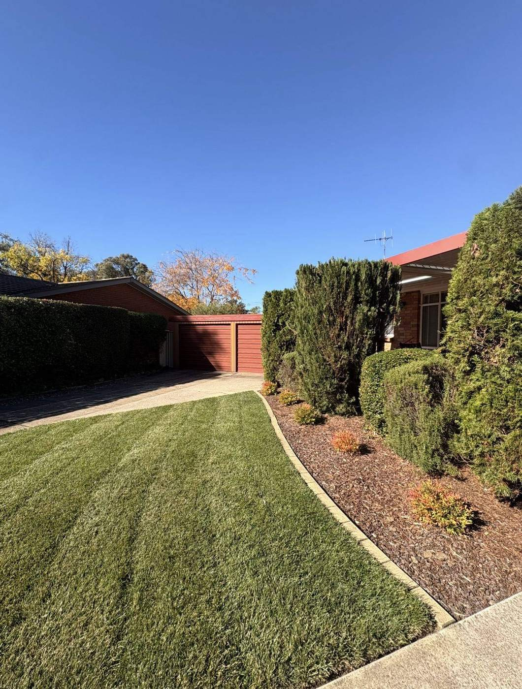
03
Formal hedges, screening conifers, shaping and height reduction. Lines are kept crisp and level, and all clippings are removed before we leave.
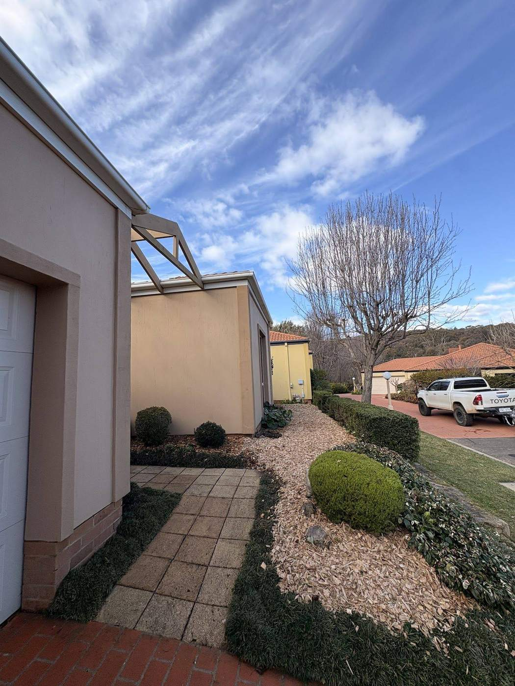
04
Overgrown gardens brought back under control, plus end-of-lease and pre-sale tidy-ups. We cut back, weed and tidy, then take all the green waste away.
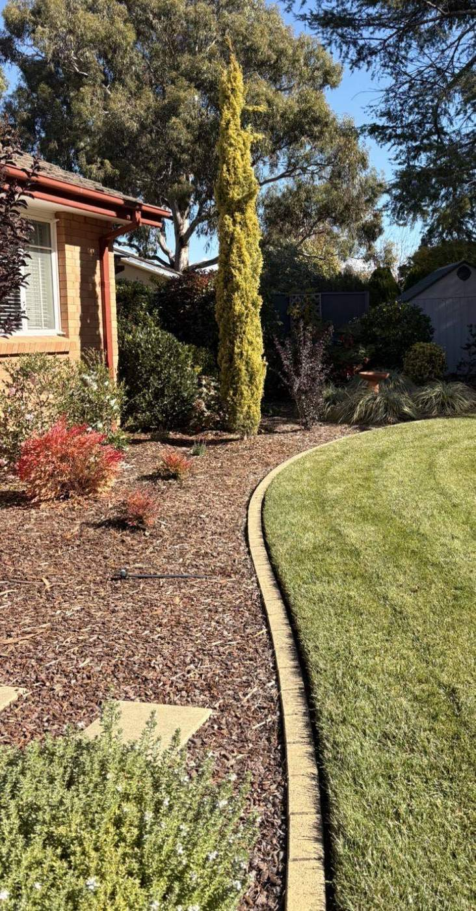
05
Fresh mulch, crisp lawn edging, weed control and planting. Beds that look sharp, hold moisture through Canberra summers and keep weeds down.
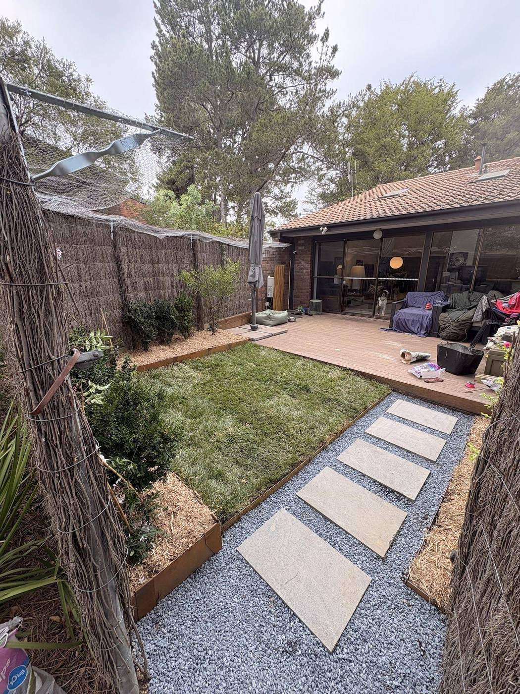
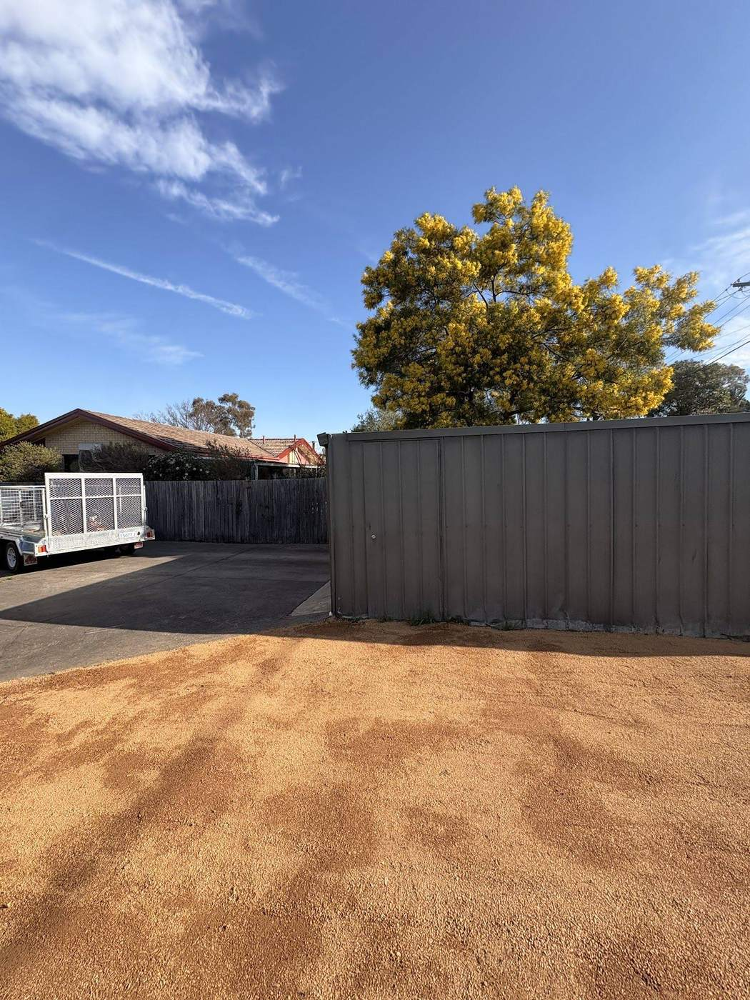
06
Decomposed granite, stepping stones and woodchip paths, laid on a properly prepared base. A low-maintenance, natural finish for side passages, driveways and garden walks.
07
Site prep, levelling, quality soil and fresh turf, so a new lawn roots in fast and grows evenly.
Best laid Sept–early Dec or March–early April
08
Patios, pathways and driveway landscaping, plus sleeper and stone retaining walls. Built level, drained properly and made to last.
09
Waterlogged yards fixed for good with re-grading and ag drains. Water goes where it should, and your lawn and beds stay healthy.
Our Work
Lawns, hedging, paths and full backyard builds, finished by Outstyle Property across Canberra.
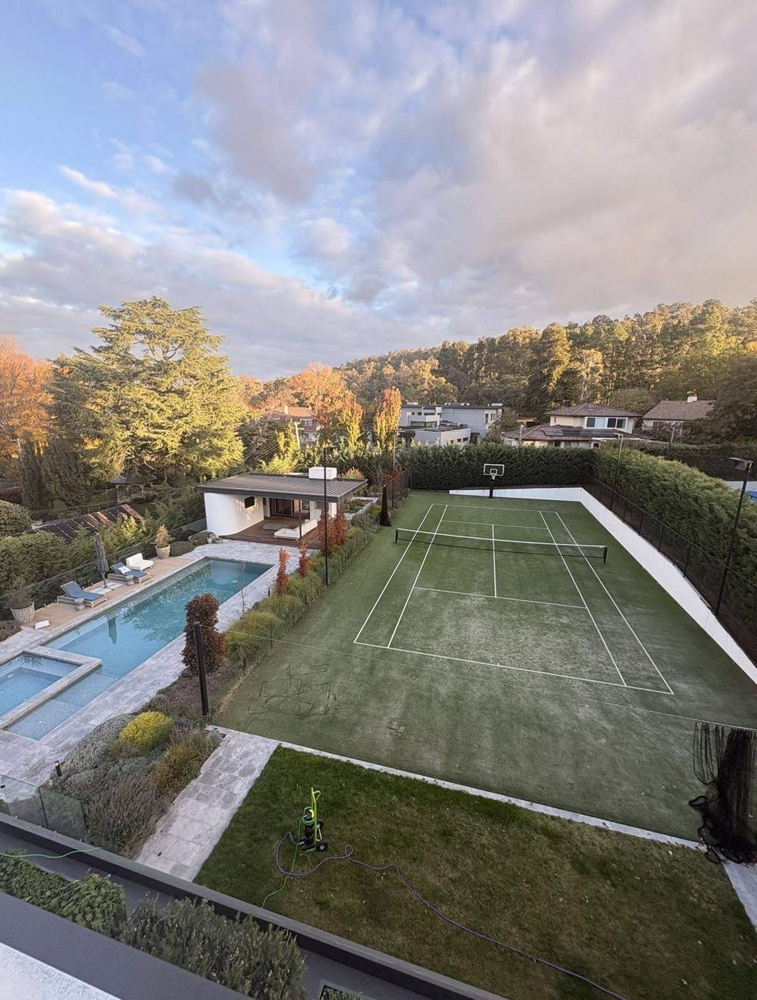
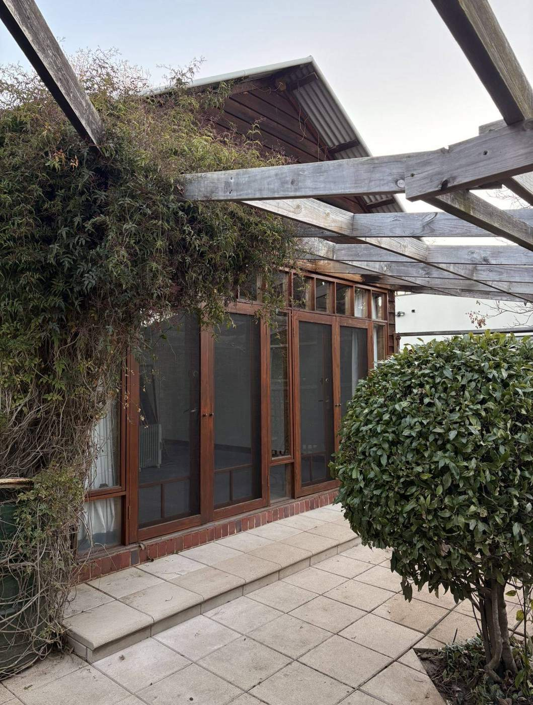
How it works
1
Photos help us understand the job before we visit.
2
A clear, free quote, with no surprises later.
3
On time and tidy, with the site left clean.
4
Regular garden care afterwards, if you want it.
Reviews
5.0★
from 10 Google reviews
“Harry and the team at Outstyle did a fantastic job landscaping my small courtyard.”
“Great price, depth of knowledge and punctual service.”
“Service with a smile.”
“A great experience with Outstyle and Harry.”
“Great job tidying and mulching.”
“Punctual and respectful.”
“Extremely good service.”
“Reasonable price.”
Areas
Lawn mowing, hedging, garden clean-ups and landscaping in every Canberra district, north to south.
Yarralumla, Deakin, Forrest, Red Hill, Griffith, Kingston, Barton, Narrabundah
Ainslie, Reid, Braddon, Turner, O'Connor, Lyneham, Dickson, Downer, Hackett, Watson, Campbell
Chifley, Curtin, Farrer, Garran, Hughes, Isaacs, Lyons, Mawson, O'Malley, Pearce, Phillip, Torrens
Weston, Holder, Duffy, Rivett, Chapman, Stirling, Waramanga, Fisher
Coombs, Wright, Denman Prospect, Whitlam
Kaleen, Giralang, Bruce, Aranda, Macquarie, Holt, Macgregor, Dunlop, Florey, Page, Scullin, Evatt, Strathnairn
Casey, Ngunnawal, Forde, Bonner, Throsby, Taylor, Moncrieff, Franklin, Harrison, Amaroo
Kambah, Wanniassa, Greenway, Calwell, Gordon, Banks, Conder, Bonython, Isabella Plains, Monash
Not sure if we cover you? Call 0437 076 939.
Most suburban lawns cost roughly $60–120 per visit depending on size, access, slope and how overgrown it is; regular fortnightly visits are usually cheaper per mow. Call or send photos for an exact quote.
Every 1–2 weeks from about October to March. Warm-season grasses slow or go dormant through the May–August frosts, so every 4–6 weeks is usually enough; fescue keeps growing slowly.
September to early December is best, with March to early April a good second window. Avoid late May to August, when cold soil stops new turf rooting.
Couch or kikuyu for full sun and hard wear (they brown off in frost), soft-leaf buffalo for part shade, and tall fescue if you want it green through winter.
Under Icon Water's Permanent Water Conservation Measures, from 1 September to 31 May sprinklers and drip systems can only run before 9am or after 6pm. Hand watering with a trigger hose is allowed any time.
Possibly. Under the Urban Forest Act 2023, private trees 8 m or more in height or canopy width are protected, and removal or major pruning needs approval. Normal hedge trimming doesn't.
Formal hedges usually need trimming 2–4 times a year, with a final shape before winter.
Yes. We mow, edge, weed, prune, mulch and take the green waste away. Send photos for a fixed quote.
Yes, every quote is free and no-obligation.
Monday to Saturday, 7am to 7pm.
Free quote
Tell us about your garden and Harry will get back to you with a clear, free, no-obligation quote.
Harry will get back to you shortly. Need it sooner? Call 0437 076 939.